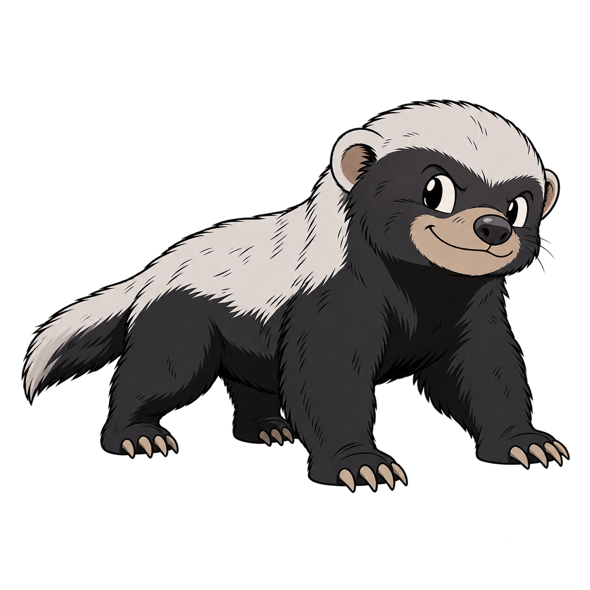
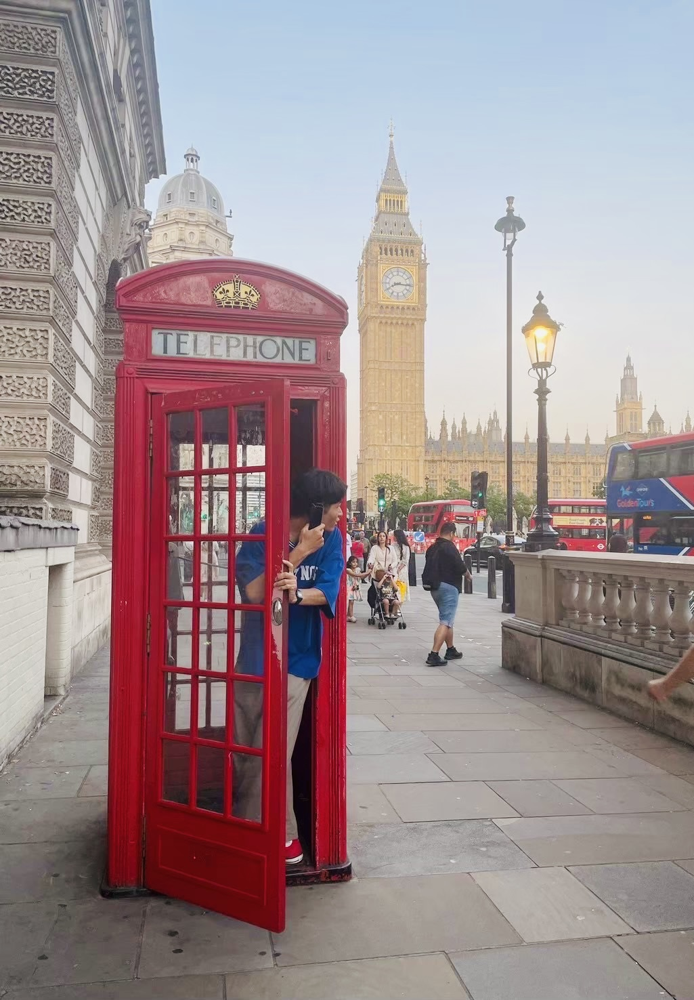
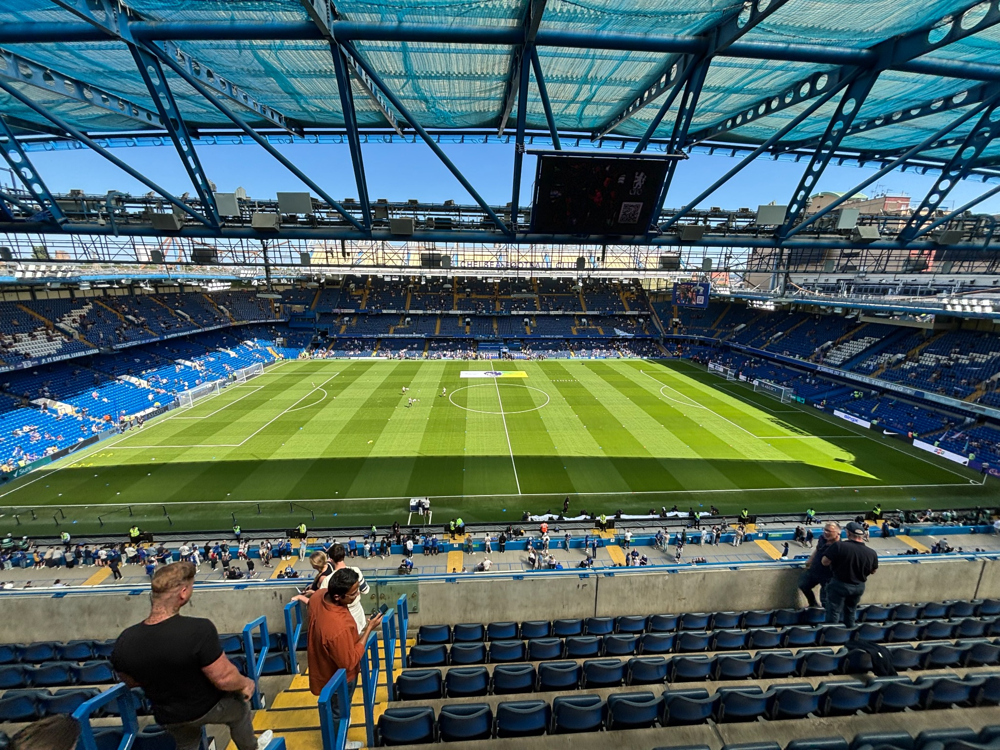
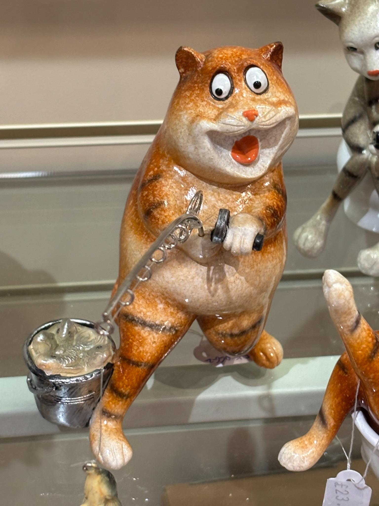

CURIOSITY
好奇心
知らない場所や新しい考えに
出会うのが好きです。
A LITTLE ABOUT ME

矢野 公太KOTA YANO
熊本学園大学 商学部 商学科 2年
気になったら、とりあえずやってみる。
そんな大学生です。
CURIOSITY
知らない場所や新しい考えに
出会うのが好きです。
ACTION
気になったら、まず一歩。
やってみることを大切にしています。
VITALITY
挑戦するときは、前向きに。
仲間と力を合わせて取り組みます。
ABOUT
はじめまして、矢野公太です。
熊本学園大学 商学部 商学科の2年生です。
周りからは「熱血」「まじめ」「バイタリティがある」とよく言われます。
気になったことは、とりあえずやってみる。
人と話すのも、知らない場所に行くのも大好きです。

ラーテルLIKES
No.01
イギリスで、プレミアリーグの「チェルシー対クリスタルパレス」を現地で観戦しました。スタジアムの熱気は、今でも忘れられません。



No.02
週末に一人で、気になるお店へ行くのが楽しみです。高校2年生から撮りためてきたごはんの写真は、もうすぐ300枚。
CHALLENGE
3週間
「英語はとにかく話してみる」と決めて過ごした3週間。日本を外から見るきっかけになり、帰ってからも英語の勉強を続けています。
30人以上
新入生の勧誘で、看板・チラシ・ダーツ体験など5つの作戦を考えて実行。たくさんの新入生が入ってくれました（男子20人・女子10人以上）。D4ダブルスでは3位になりました。
17名
株式会社ピークスキャリアで、営業やイベントの集客に挑戦中。開催1か月前には4人しか集まっていなかったイベントで、集め方を工夫し、仲間と力を合わせて17名まで集めました。